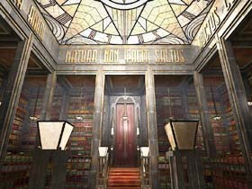
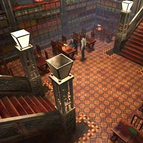

| 概要 | 地図 | |
| 淡いヒント集 | ヒント集 | 的確なヒント集 |
| 攻略最短ルート | Syberia 攻略へ |
| << 前の段階へ | 地域選択へ | 次の段階へ >> |
バロクシュタット
大学の図書館
 ・図書館には、様々な知識が集まっている。必要な知識は、ここでそろえられるだろう。 ・これだけ膨大な本があると、どこを調べていいか迷ってしまう。しかし、案内人も看板もない。自力で調べなければならない。 ・よく調べるべきだ。目の高さにある本が全てではない。
一段上の棚にある本
・よく見てみよう。何か秩序を乱しているものが見えないだろうか。 ・ここは、図書館のどこに当たるだろうか。
図書館、一段下
 ・学生達は何をしているだろうか? また、何か知っているだろうか? ・誰かが重要な情報を持っているかもしれない。 ・誰かが重要な書物を知っているかもしれない。 ・誰かが重要な書物を今持っているかもしれない。
ポンス教授
 ・彼はどのような人物だろうか? 仕事は、趣味は、夢は・・・とにかく聞くべきだ。 ・彼は大学では一番友好的な人物である。そのため、困ったときには何か手助けをしてくれるかもしれない。 ・知りたいことは、根気よく聞くべきだ。また、時には不本意でも指示に従うことも大切である。 |
| << 前の段階へ | 地域選択へ | 次の段階へ >> |
| 概要 | 地図 | |
| 淡いヒント集 | ヒント集 | 的確なヒント集 |
| 攻略最短ルート | Syberia 攻略へ |
Syberia
| 目次へ戻る | ページの上部へ |